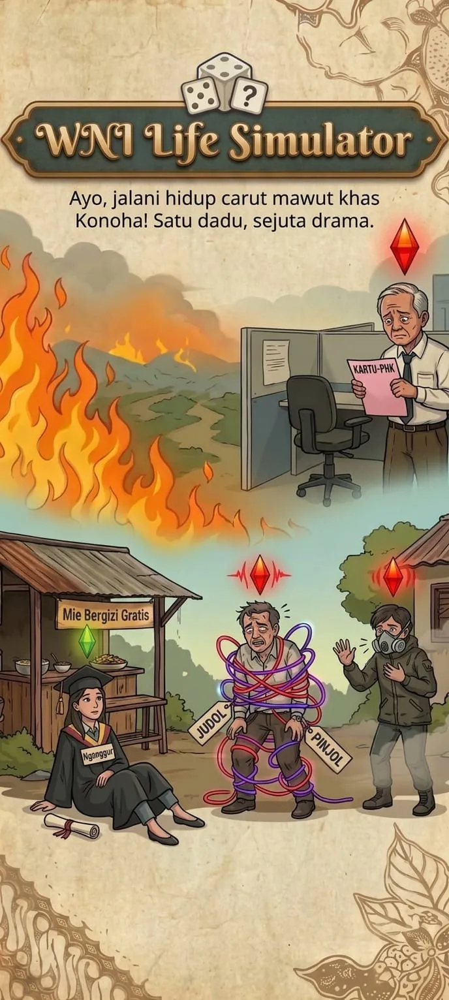
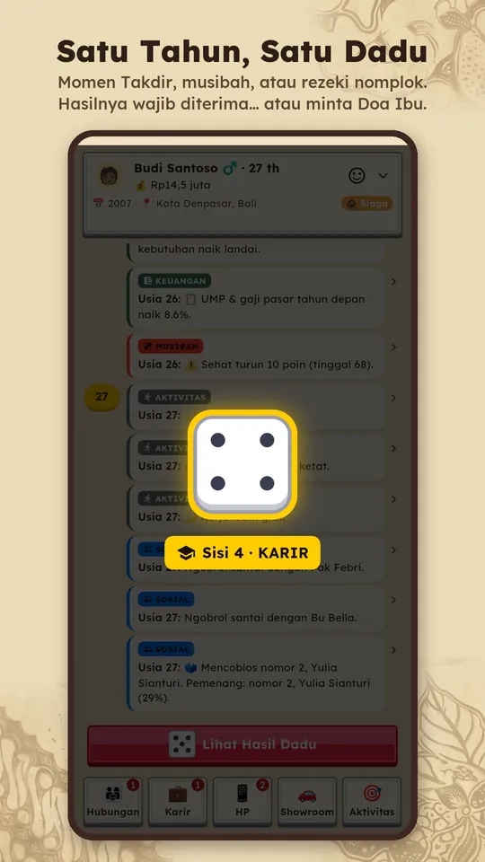
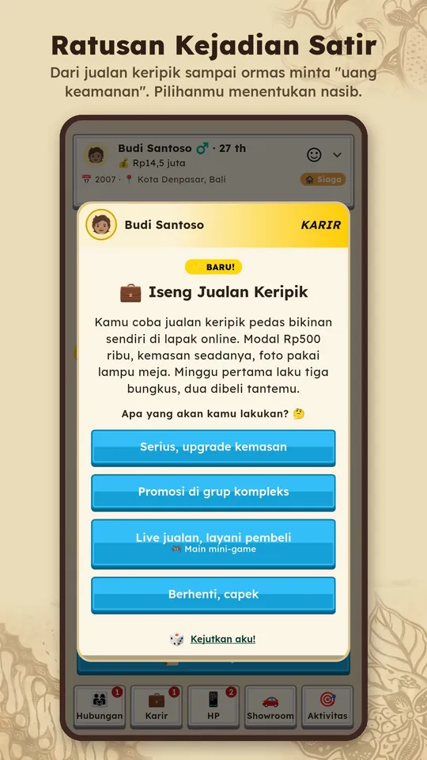
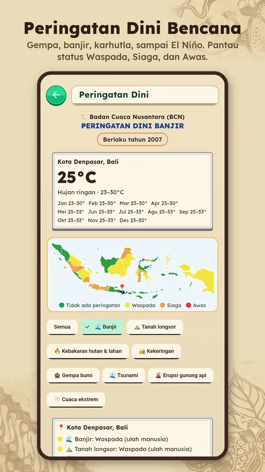
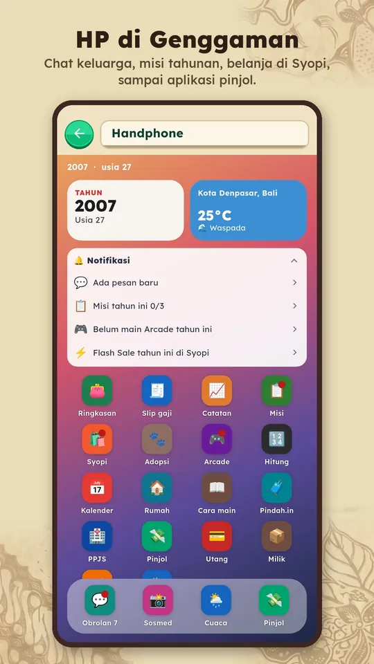
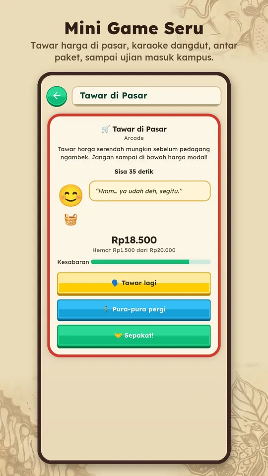
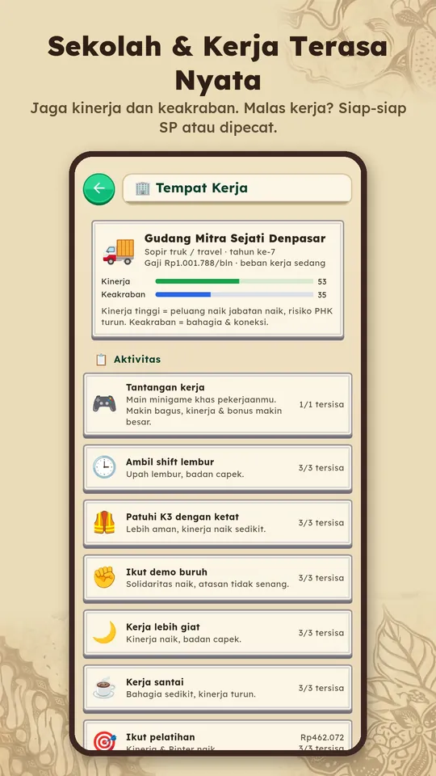

Main duluan, bantu kami rilis
-
Langkah 01
Gabung grup penguji
Buka grup Penguji WNI Life lalu gabung. Pakai akun Google yang sama dengan di HP.
-
Langkah 02
Aktifkan tes
Buka halaman tes WNI Life dan ketuk Jadi penguji.
-
Langkah 03
Pasang dan main
Pasang dari Google Play, main, lalu kirim masukan lewat email.

Kamu tidak bisa memilih lahir di mana
“Satu dadu, sejuta drama.”
WNI Life Simulator adalah game simulasi kehidupan berbasis teks tentang hidup sebagai warga negara Indonesia, dari bayi sampai tua.
Keluarga, kondisi ekonomi, dan daerah asal diundi. Ada yang lahir di kota besar, ada yang di desa. Ada yang orang tuanya lengkap, ada yang dibesarkan nenek. Dari situ, pilihanmu yang menentukan nasib.
Setiap pilihan punya akibat untuk uang, kesehatan, kebahagiaan, dan hubunganmu. Saat hidupmu berakhir, lanjutkan cerita sebagai anakmu.
Seperti apa mainnya?








Hidup yang tidak bisa dipilih, tapi bisa dijalani
Dadu Takdir
Setiap tahun satu lemparan: rezeki nomplok, musibah, atau kejadian sehari-hari. Hasilnya wajib diterima, atau minta Doa Ibu.
Kejadian satir
Lebih dari seribu kejadian: jualan keripik, arisan, ormas minta "uang keamanan", banjir, mudik, pinjol, sampai viral di medsos.
Sekolah dan karir
Ujian pilihan ganda sungguhan, masuk kampus, cari kerja dari puluhan profesi. Naik jabatan, kena PHK, atau buka usaha.
Keluarga
Pacaran, menikah, punya anak dan cucu, pelihara hewan. Saat hidupmu berakhir, lanjutkan sebagai anakmu.
Pemilu dan bencana
Baca janji kampanye, coblos, lihat hitung cepat. Waspadai peringatan dini cuaca dan bencana per provinsi.
HP dan mini game
Chat keluarga, belanja daring, misi tahunan. Tawar harga di pasar, karaoke, dan puluhan ending untuk dikoleksi.
Sekilas
- Platform
- Android 7.0+
- Bahasa
- Indonesia
- Harga
- Gratis, ada iklan
- Pembelian opsional
- Paket Sultan (bebas iklan)
- Akun
- Tidak perlu
- Usia
- 18+
Game ini fiksi dan satire untuk pemain dewasa (18+). Semua tokoh, partai, merek, dan lembaga di dalamnya rekaan. Ada simulasi judi plesetan yang hanya memakai uang di dalam game, tanpa uang sungguhan dan tanpa hadiah nyata, justru untuk menunjukkan bahwa judi selalu merugikan. Game ini tidak berafiliasi dengan pemerintah atau lembaga mana pun.